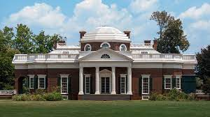
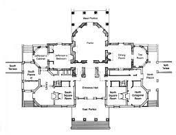

102. Monticello, Virginia, US Thomas Jefferson (architect) 1768-1809 CE Brick, glass, stone, and wood.
- Form
- Monticello is a brick building with stucco applied to the trim to give the effect of marble
- It appears to be a one-story building with a dome, but the balustrade hides a modest second floor
- The octagonal doe functions as an office or retreat
- The rooms generally have a symmetrical design
- Tall French doors and windows allow air circulation in hot Virginia summers
- Jefferson was concerned with saving space: very narrow spiral staircases; beds in alcoves or in walls between rooms
- Function
- Chief building on Jefferson’s plantation, supported by slave labor
- Context
- Monticello is “little mountain” in Italian, sited on a hilltop in Virginia
- Inspired by books by the Italian Renaissance architect Palladio and by Roman ruins Jefferson saw in France
- The design is also impacted by eighteenth-century French buildings in Paris
- Illustrates the Roman Republican goals of equality and democracy expressed in this adaptation of Roman architectural themes.